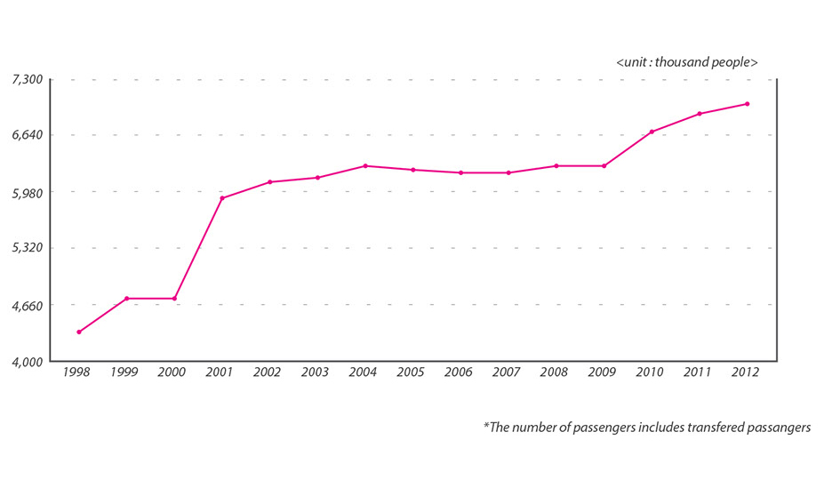
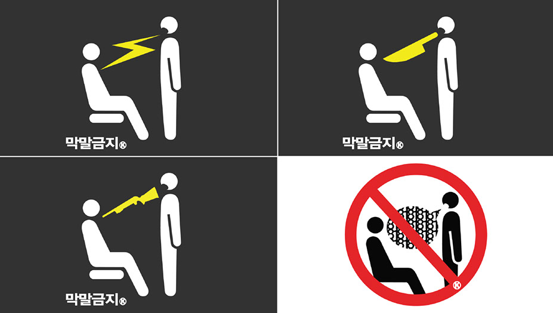
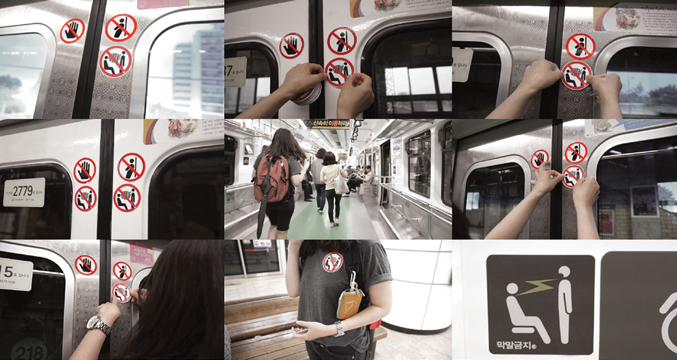
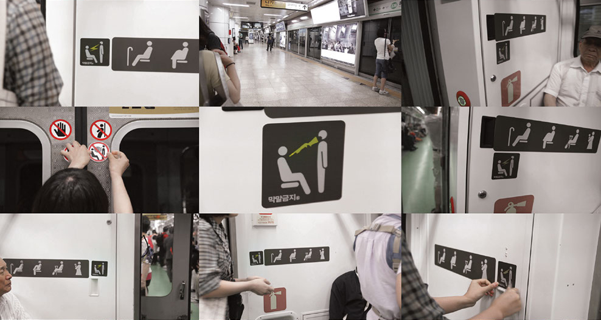

81 Project
Design campaign to encourage citizens for the better public etiquettes
Designers: Jaeyong Lee, Seonju Ryu, Sooji Park, Yoonjung Lee, Jongwon Baek
Roles: Project lead, graphic design, fliming & editing
The 81 project is a campaign for etiquettes for the public that began in the summer of 2011 in South Korea. At the time, four designers who involved in this project recognized a social phenomenon in South Korea that some people demonstrated irrational behaviors in public, and sometimes it hurts others emotionally and physically. To deliver social messages to the public to stop such negative behaviors, the 81 project designed ban stickers and installed in the subway line number 2 in Seoul. We also made a short film about this issue with all the processes of installations. The film was shared on major online communities and encouraged discussions among people to bring attentions for this issue.
81 project showed the impact of a simple visual design and design actions reflecting the context of a phenomenon, and how designers could involve themselves in such issues that socially happening around.
Background
The most crowded subway line in the Seoul metro system is line 2. Around 1.5 million people use line 2 per day, and this line registered the highest ratio of annual users among subway lines 1 to 8. Since many travelers use the line, many troubles have been reported. Line 2 showed the highest number of incidents in the subway lines, reaching as many as 6,919 in the first half of 2013. For these reasons, we chose line 2 as the performance target.
Design Concept
The stickers had 4 types that swear words are represented as a weapon, a knife, lightning, and as 81 (the number '18’ means a swear word in Korean). The symbols convey a message that irrational words or behaviors could threaten someone in public, and it should be banned.
 StickersDesign Outcome
  Installing stickers in subways
The video that includes all the processes and the executions was shared it on the Internet on major online communities and social networks. The video recorded over 20,000 views and 210 comments.
Many people already knew the issue, and gave cheerful comments to the implementation. Among various feedbacks, some people also gave objective criticisms about our project; it should have not only the installation of ban stickers, but also the result of people’s feedbacks and comments.
We do not think the stickers would be the best way to solve the problem, but we tried to attract people’s attention into the issue, so that it raises a question that how we would react or behave about this situation. We do not know the answer yet, but we believe that we should appropriately behave when we are in public. Until we shared this issue on the internet, new incidents constantly had been reported. What can designers do to resolve these social issues?